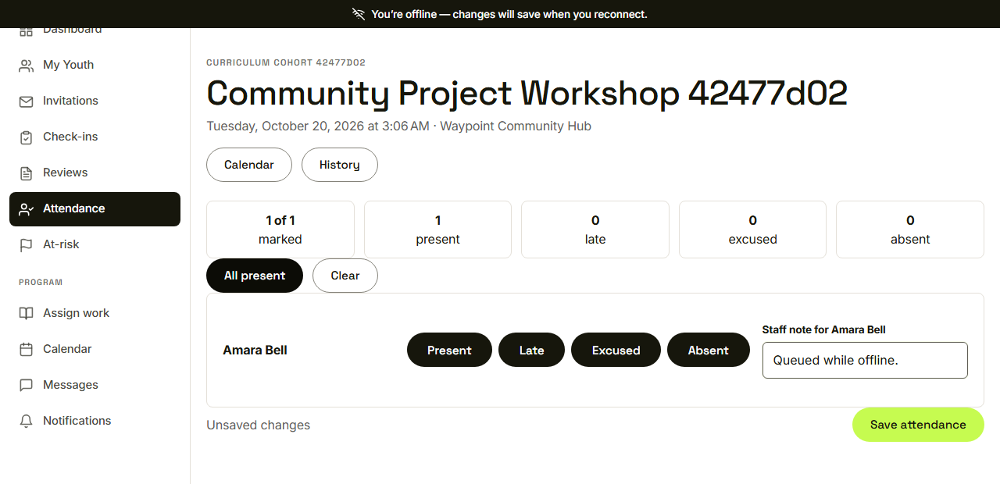
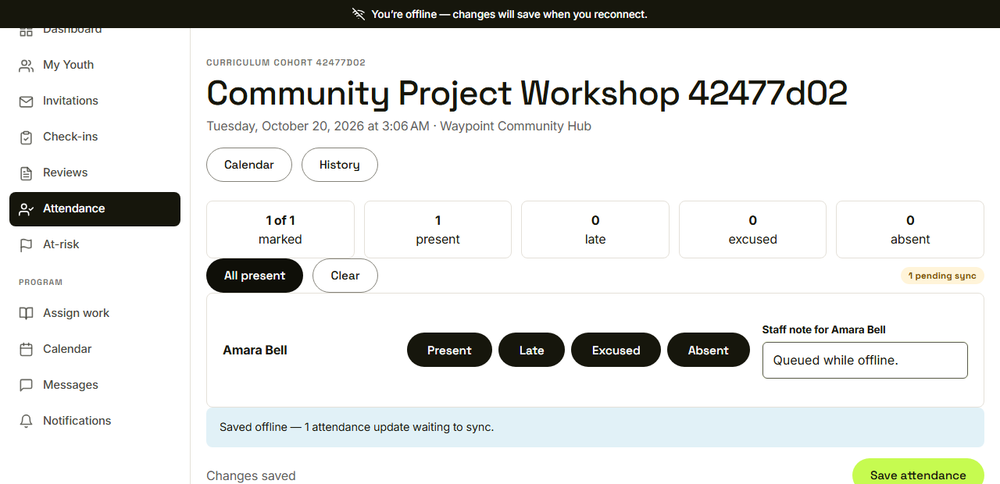
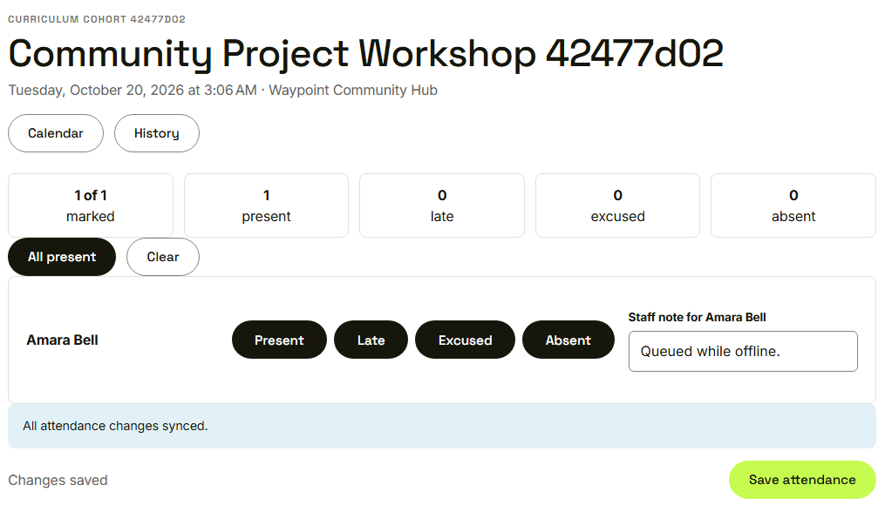
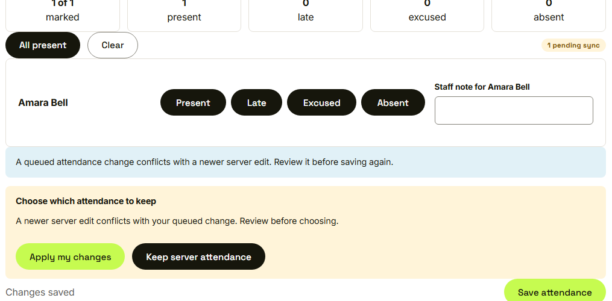

Waypoint · Video 075
Recording attendance without a connection
Saved on the device, synced when the signal returns
The offline banner

You're offline, changes will save when you reconnect
Saved offline, waiting to sync

One attendance update waiting to sync
All changes synced

The update uploads by itself
A conflict is shown, not hidden

Review it before saving again
Things to remember
- Record attendance with no connection
- A banner and a badge show what is waiting
- Waiting updates upload once, without duplicates
- Conflicts are shown, and nothing is lost silently